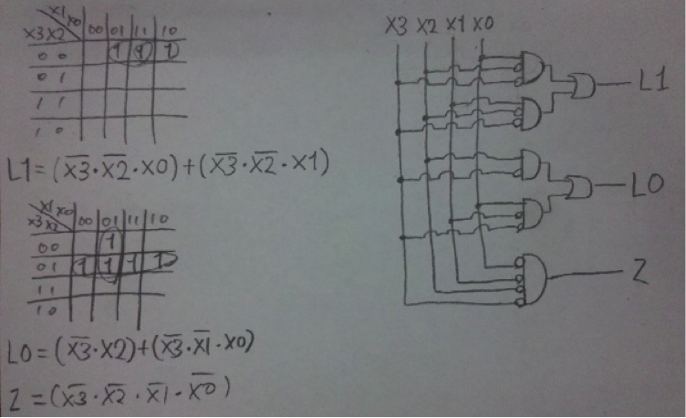
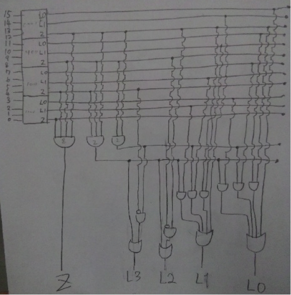

(a) サブルーチン呼び出し時にはサブルーチンから戻って来たことを考えて、呼び出し前の情報を再現するためにコールスタック上にレジスタの値やPCの値等をプッシュさせておく。仮にモジュールの外から直接積まれたデータを変更可能であるとすれば、故意にせよ不本意にせよ正常なプログラムの動作に致命的なダメージを与えかねない。例えば退避させておいたPCが他のプログラムに何らかの拍子に不本意に他の値に上書きされたとすれば、もはや正常な解と動作を保証することは不可能である。
(b) カプセル化し、直接データ構造を読み書き出来ないようにする。モジュール内のデータにアクセスする場合は、予めモジュール内で実装されている手続きを通して行うようにすればよい。
| X3 | X2 | X1 | X0 | L1 | L0 | Z |
| 0 | 0 | 0 | 0 | * | * | 1 |
| 0 | 0 | 0 | 1 | 1 | 1 | 0 |
| 0 | 0 | 1 | 0 | 1 | 0 | 0 |
| 0 | 0 | 1 | 1 | 1 | 0 | 0 |
| 0 | 1 | 0 | 0 | 0 | 1 | 0 |
| 0 | 1 | 0 | 1 | 0 | 1 | 0 |
| 0 | 1 | 1 | 0 | 0 | 1 | 0 |
| 0 | 1 | 1 | 1 | 0 | 1 | 0 |
| 1 | 0 | 0 | 0 | 0 | 0 | 0 |
| 1 | 0 | 0 | 1 | 0 | 0 | 0 |
| 1 | 0 | 1 | 0 | 0 | 0 | 0 |
| 1 | 0 | 1 | 1 | 0 | 0 | 0 |
| 1 | 1 | 0 | 0 | 0 | 0 | 0 |
| 1 | 1 | 0 | 1 | 0 | 0 | 0 |
| 1 | 1 | 1 | 0 | 0 | 0 | 0 |
| 1 | 1 | 1 | 1 | 0 | 0 | 0 |


初期入力からキャリを生成するリプルキャリ型であれば遅延時間をO(logn)に抑えることが可能。
例えば上記回路の例で言えば、
Z = ¬0*¬1*・・・*¬14*¬15
で初期入力からZ信号が求められる。
入力数nに対してlognに比例した時間がかかると近似出来るので、O(logN)となる。